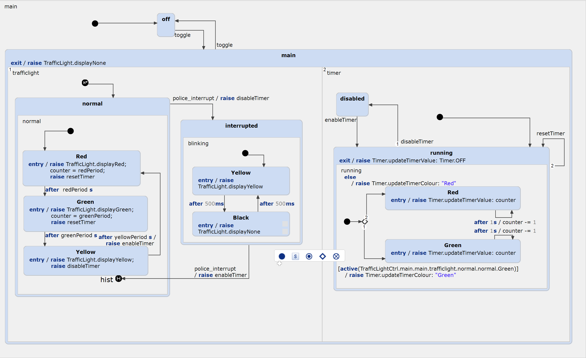
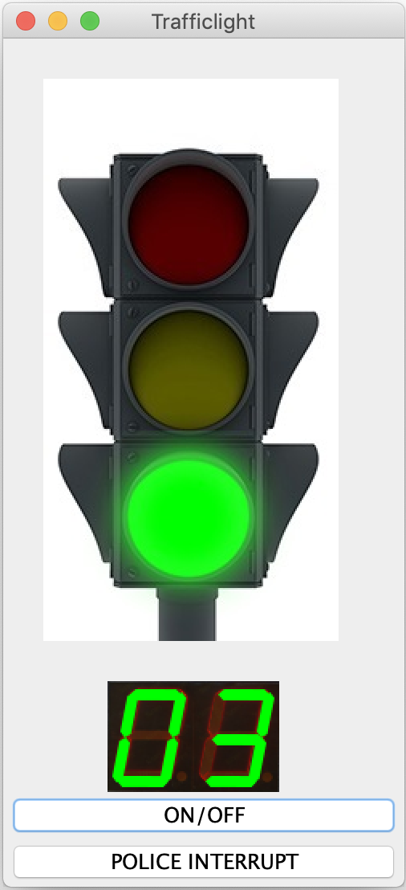
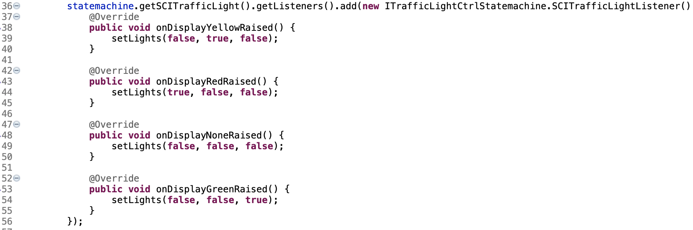
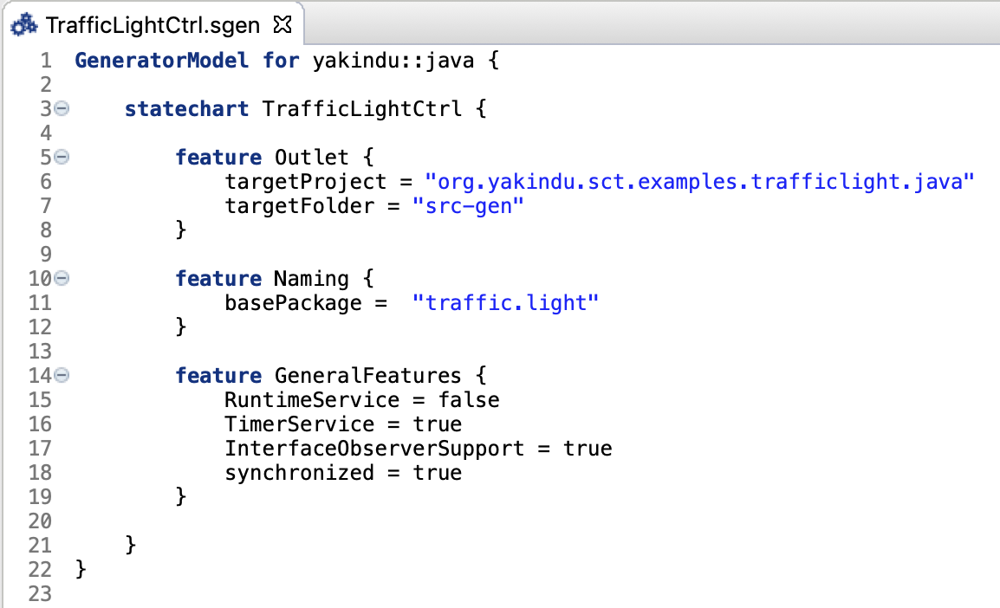

This example application demonstrates how to generate Java source code from a statechart and how to integrate the generated code in a simple GUI application.
The example shows the following features:

In summary, the traffic light can be in one of two different modes, a normal
mode and an interrupt mode which is enabled by the police.interrupt event.
The interrupt mode turns the yellow lights into a blinking mode.
In an orthogonal region a counter is decremented for visual feedback on the
duration of the traffic light's red and green phases. The duration of the corresponding
traffic light phases is specified by the variables redPeriod, greenPeriod and yellowPeriod.
The traffic light example is based on Java and contains a small GUI
that demonstrate the state machine behaviour in
/model/TrafficLightCtrl.sct. This example combines generated Java code
with manual Java implementations (the GUI). To generate the state machine
code, right-click on /model/TrafficLightCtrl.sgen and select 'Generate
Code Artifacts'. To start the application run
src/traffic/light/TrafficlightDemo.java. For this, just right-click on the
project and select 'Run As > Java Application'.

For interaction with the GUI, the traffic light controller raises outgoing events whenever a state is entered.
The application code in TrafficlightDemo.java
implements a corresponding listener to get notified whenever a state changes
in order to paint the graphics accordingly.

The listener interface is not generated out of the box. It needs to be enabled in the generator model. The corresponding
property is InterfaceObserverSupport under GeneralFeatures.
